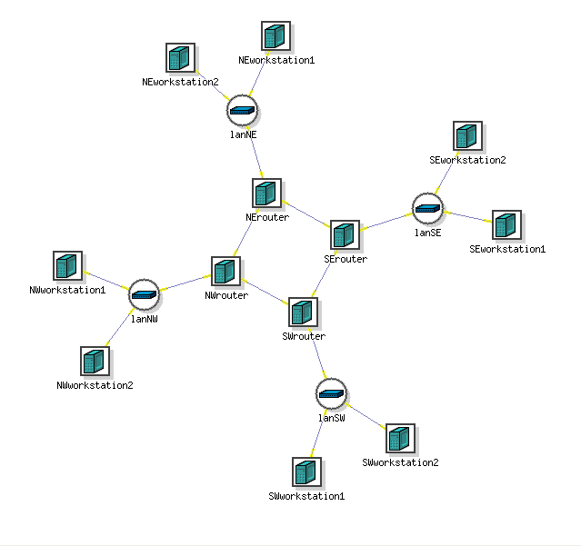
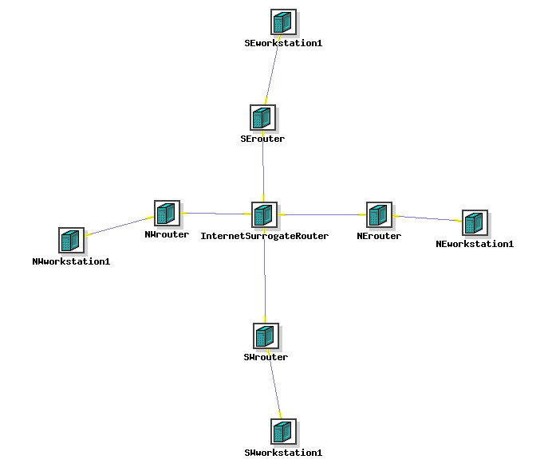
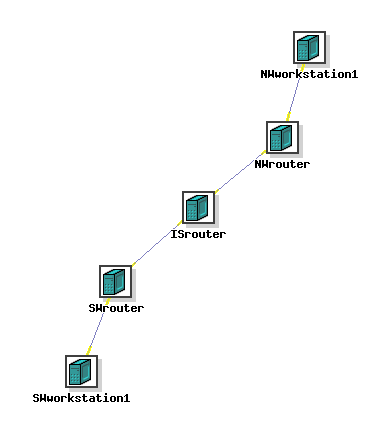
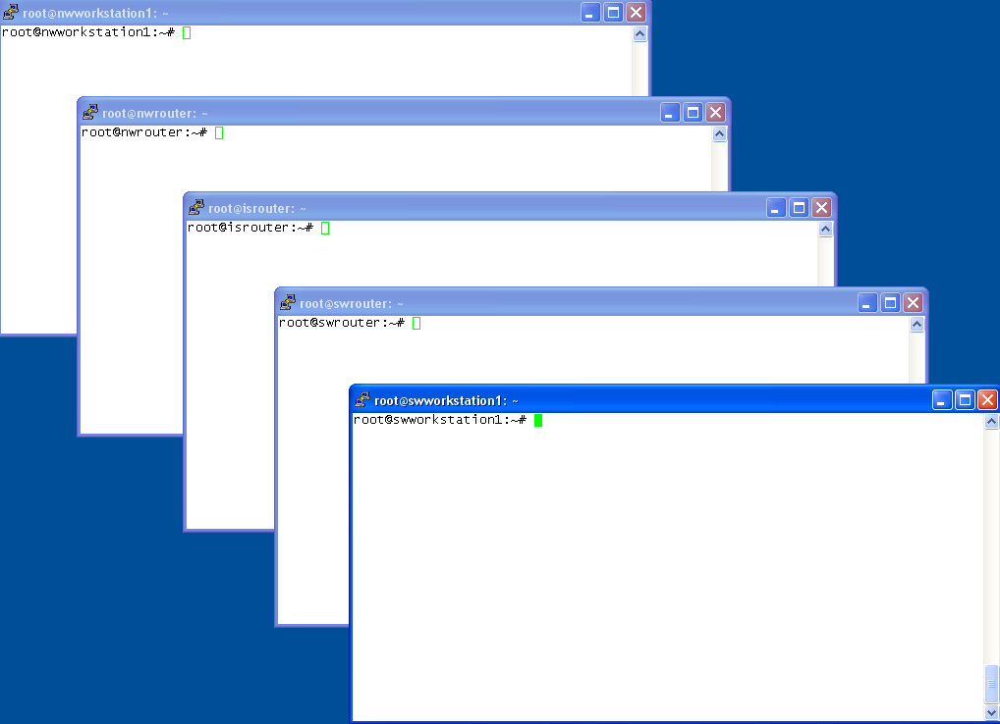
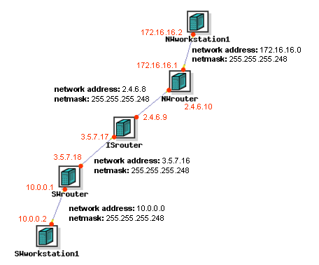

Internetworking:
achieving it with addressing and routing
enhancing it with NAT and port forwarding
This exercise stems from a hands-on class exercise in which students use local equipment to construct a "scale model of the internet" that looks like this:
The central 4-router square represents the internet backbone, and there are 4 attached LANs. However DETER has a limited number of nodes and the point can be made with a smaller model. It might halve the number of workstations and could also reduce the 4-node "backbone" to a single machine "InternetSurrogateRouter." The new model looks like this:
But the final model you will use for this exercise can be still more node-economical. It looks like this:
It is spare, but as you work with it please recognize how it models the larger internet and that the methods you will use below to perform network address translation and port forwarding do not differ from doing it on the internet at large.
It's very important to understand NIC selection and enumeration (naming) in this experiment. DETER nodes generally have 5 ethernet interfaces (NICs). You don't fully control which get used nor what addresses they receive. An experiment node that uses a single NIC might use eth2 today, but eth5 when you repeat the experiment tomorrow. Imagine creating the equivalent of a DETER experiment, but with local equipment. When cabling two machines together, if they held 5 NICs each, you would need to pick particular NICs in which to plug your cable ends. You could use any free NIC you wanted, but once chosen you would have to be mindful which NICs you used. For example when conferring IP addresses you must apply the ifconfig command to the same NICs that possess the cable. Otherwise you do so in vain. Sniffing, you must apply Wireshark to those same interfaces. Otherwise you sniff in vain. Here you don't choose which NICs to "cable," DETER does. And you can't determine by visually following the cable since your experiment is remote, out of sight. So you will need some way to discover what is cabled to what, between nodes. The configuration file for this experiment, in effect, delivers you the above internetwork with cables already in place between certain NICs. But a) you don't know which ones, and b) DETER refrains from giving them addresses. We want DETER to stay out of that, since part of the exercise is for you do do the addressing yourself, then do routing that accords with it.
It is assumed here you already have a DETER account and password, created following these instructions. Please log in to DETER and "Begin an Experiment," naming it "internetworking-xxx" (where xxx is some suffix like your initials likely to be unique to avoid name conflict with other students' experiments) and loading in /share/shared/Internetworking/internetworking.ns NS file.
Swap your new experiment in.
To interact with your nodes you need to gain an interface to each. You gain a terminal window interface to any of the nodes by "double ssh," connecting to users.isi.deterlab.net and from there to the node. For example, to connect to SWworkstation1:
ssh
ssh SWworkstation1.
Set up your monitor screen to contain 5 terminal windows, one to each of the experiment nodes arranged as in the graphic below. To do so first use ssh to get 5 terminal window connections to users.isi.deterlab.net, then from them again to the 5 nodes respectively as above. Once you are logged into a node, become root there, by executing (5 times, in the different terminal windows):
sudo su - (be sure to include the hyphen)
Your screen will look something like the following, with the windows stacked in the same order as in the above figure, and the title bars accessibly arranged for single-click selection of the window of any desired node.
(As a possible alternative, there is a utility called "screen" installed on users.isi.deterlab.net. It is a character-mode program allowing you to open mulitple remote sessions and show them alternately or in split-screen.)
Let's look at the initial state of your nodes, in terms of IP addressing. Visit each of them, and look:
ifconfig
You should see two interfaces with addresses. For purposes of interpreting your internetwork diagram you can overlook both. In the diagram, interfaces appear as the endpoints of the line segments between nodes (red dots in diagram below). There are eight. The two interfaces you just examined are separate from all of them. (One is the loopback interface, internal to the node; the other is the DETER control network address, by which DETER can communicate with nodes through a backchannel independent of their experiment-specific roles. The loopback interface will have address 127.0.0.1, the control interface will have a 192.168.0.x or similar.) So in effect, you've got unaddressed computers. If they are to have addresses and communicate, it's up to you to take care of it. You are going to have to use ifconfig to place addresses on the "line segment endpoints," or more specifically on the interfaces they represent. But you don't exactly know which ones they represent! Run ifconfig again on any node, with the -a ("all") option this time:
ifconfig -a
Several (probably 4) additional nodes are revealed, with no addresses on them. One of them (for workstations) or two (for routers) have cables to their neighboring node(s). The others are "cableless." You need to put addresses on the cabled ones (putting addresses on the cableless ones is OK, but useless). But the cables are invisible. So you need to identify which NICs have the cables and which don't. There is a script to help do that. It is called "showcabling" and must be run from users.isi.deterlab.net (as opposed to running from within any of your experiment nodes). On users.isi.deterlab.net:
/share/shared/Internetworking/showcabling <experiment name> <project name>
You should see something like:
[davidmor@users.isi.deterlab.net:~] > /share/shared/Internetworking/showcabling internetworking SMC-CS70 NWrouter eth4 <- is "wired" to -> NWworkstation1 eth4 ISrouter eth4 <- is "wired" to -> NWrouter eth1 ISrouter eth1 <- is "wired" to -> SWrouter eth1 SWrouter eth4 <- is "wired" to -> SWworkstation1 eth4 [davidmor@users.isi.deterlab.net:~] >
although the NIC numbers will generally differ. Write this down or redirect it to a file in your home directory so you can look at it or cat it for reference. I found it helpful to fill out a paper map identifying the interface names and IP addresses that go with them, for repeated referenece throughout the exercise. If you wish, print it out, fill in the interface names from the above "showcabling" output and the address values as they are assigned below. Bear in mind that if you swap your experiment out then swap in again at a later time to resume work, you will get different results from "showcabling" and will have to adjust accordingly. You will also lose the transient address assignments and route entries you're going to make below. So I suggest you set aside a block of time and try to do the exercise in a single sitting. Your interface names will also differ from mine. It's very important you use the right interface names in all the commands below that call for them. Where you see me use "eth4" for example, don't just type it and go. Your corresponding interface may bear the name "eth2" and you must be always analytical about it or you will find yourself doing more fixing than building. Having the paper map on your desk will greatly help keep you straight here.
Now you will choose 4 networks (subnets), select 2 addresses from each, and apply those those to the NICs at opposite ends of each "cable." A network is defined by a network address and netmask (where the address is an integral multiple of the mask's implied network size). The networks for the end LANs (NW and SW) should be chosen from the private IP address ranges (described below). I will choose certain stand-in network addresses here. You may use them, or you might use your understanding of subnetting to choose different ones and, in any instructions below containing mine, substitute yours. Conceptually, let me choose and distribute the networks and addresses this way:
Now implementationally let me apply this, below. If you chose your own addresses different from mine, you use my commands below only as a model. Use your addresses and masks, not mine. And also don't forget, use your interfaces as revealed by the "showcabling" script, not mine. Be careful not to waste your time putting addresses on the interfaces that have no cable attached!
On NWworkstation1:
ifconfig eth4 172.16.16.2 netmask 255.255.255.248 use your interfaces and addresses here not mine!
ifconfig eth4 172.16.16.1 netmask 255.255.255.248
ifconfig eth1 2.4.6.10 netmask 255.255.255.248
ifconfig eth4 2.4.6.9 netmask 255.255.255.248
ifconfig eth1 3.5.7.17 netmask 255.255.255.248
ifconfig eth1 3.5.7.18 netmask 255.255.255.248
ifconfig eth4 10.0.0.1 netmask 255.255.255.248
ifconfig eth4 10.0.0.2 netmask 255.255.255.248
ping 2.4.6.10
ping 3.5.7.17
ping 172.16.16.2
ping 10.0.0.2
Set the 4 routing tables (one in each node) such that we have universal connectivity within our little 4-LAN, 5-node universe. There are a number of ways to do it. Explicit and/or default routes can be used. The idea is that each node requires knowledge how to dispatch a packet depending as it may be addressed to any of our internetwork's 4 constituent LANs. The tools for "educating" it are variantions of the route command:
Add route to a group of machines (network route -
local)
route add -net 192.168.4.0 netmask 255.255.255.0 eth0
Add route to a group of machines (network route - gatewayed)
route add -net 192.168.5.0 netmask 255.255.255.0 gw 192.168.4.1
Add route to "any and all" (default route)
route add default gw 192.168.4.1
route -n
route add -net 2.4.6.8 netmask 255.255.255.248 gw 172.16.16.1
route add -net 3.5.7.16 netmask 255.255.255.248 gw 172.16.16.1
route add -net 10.0.0.0 netmask 255.255.255.248 gw 172.16.16.1
route add -net 3.5.7.16 netmask 255.255.255.248 gw 10.0.0.1
route add -net 2.4.6.8 netmask 255.255.255.248 gw 10.0.0.1
route add -net 172.16.16.0 netmask 255.255.255.248 gw 10.0.0.1
route add -net 3.5.7.16 netmask 255.255.255.248 gw 2.4.6.9
route add -net 10.0.0.0 netmask 255.255.255.248 gw 2.4.6.9
route add -net 2.4.6.8 netmask 255.255.255.248 gw 3.5.7.17
route add -net 172.16.16.0 netmask 255.255.255.248 gw 3.5.7.17
route add -net 172.16.16.0 netmask 255.255.255.248 gw 2.4.6.10
route add -net 10.0.0.0 netmask 255.255.255.248 gw 3.5.7.18
At this point you should be able to ping every interface from every node. Please do some spot checking. In particular make sure the endpoints can ping each other as follows.
On NWworkstation1:ping 10.0.0.2
On SWworkstation1:ping 172.16.16.2
If we are trying to simulate the Internet, we need to implement its prohibition against certain addresses. The internet dislikes all that begin with 10 or 192.168, and some that begin with 172. Two of our LANs (NW and SW) are like that. These are perfectly good addresses. They work just fine, as you saw in the section above. But the internet labels them "private addresses," meaning "not to be used on our internetwork" and constructs artificial prohibitions against them (defined in rfc1918, "... packets with private source or destination addresses should not be forwarded across [inter-enterprise] links. Routers in ... Internet service providers, are expected to be configured to reject (filter out) routing information about private networks."). Let's do exactly the same, in our Internet surrogate router.
On ISrouter:
iptables -I FORWARD -d 192.168.0.0/16 -j DROP
iptables -I FORWARD -d 172.16.0.0/12 -j DROP
iptables -I FORWARD -d 10.0.0.0/8 -j DROP
iptables -I FORWARD -s 192.168.0.0/16 -j DROP
iptables -I FORWARD -s 172.16.0.0/12 -j DROP
iptables -I FORWARD -s 10.0.0.0/8 -j DROP
iptables is the command for building firewalls. Firewalls, famously, are in the business of blocking certain packets. That's what we're doing here. We are passing a law that says any packet addressed to ("-d" destination) or from ("-s" source) one of the 3 disapproved ranges is subject to arrest ("DROP") upon sight in ISrouter. Such a packet will be discarded there; it will not get though. That will put a stop to any pinging we might try from our customer LANs NW and SW. Check that by repeating your end-to-end ping attempts.
On NWworkstation1:ping 10.0.0.2
On SWworkstation1:ping 172.16.16.2
These pings don't work anymore. Let them keep trying (they appear to hang). While they labor, go sniff network traffic on their local routers On NWrouter, using whichever interface faces ISrouter (it's the one bearing IP 2.4.6.10):tcpdump -nnti ethX icmp
On SWrouter, using whichever interface faces ISrouter (it's the one bearing IP 3.5.7.18):tcpdump -nnti ethY icmp
You will see something like:root@swrouter:~# tcpdump -nnti eth1 tcpdump: verbose output suppressed, use -v or -vv for full protocol decode listening on eth2, link-type EN10MB (Ethernet), capture size 65535 bytes IP 10.0.0.2 > 172.16.16.2: ICMP echo request, id 2630, seq 635, length 64 IP 10.0.0.2 > 172.16.16.2: ICMP echo request, id 2630, seq 636, length 64 IP 10.0.0.2 > 172.16.16.2: ICMP echo request, id 2630, seq 637, length 64here showing that the pings from SWworkstation1 that never reach their NWworkstation1 destination are at least getting as far as SWrouter from whence they even get released onto the wire that connects to ISrouter. This demonstrates that ISrouter is where they are dying, due to those firewall barriers we erected.
Network address translation (a.k.a. NAT or IP masquerading) is a technique to overcome this communication disability suffered by privately addressed LAN nodes (the majority within home, school, and office networks). Internet-facing routers (like our NWrouter and SWrouter) do it by "lending" their operationally valid "public" IP addresses to packets coming from their workstations contaminated with the workstations' "private" ones. This diagram summarizes it:
And these commands implement it.
On NWrouter:iptables -t nat -A POSTROUTING -o eth1 -s 172.16.16.0/29 -j SNAT --to 2.4.6.10
On SWrouter:iptables -t nat -A POSTROUTING -o eth1 -s 10.0.0.0/29 -j SNAT --to 3.5.7.18
The latter command for example says, to SWrouter, please apply to packets that are heading out ("-o eth1") whose source address is a 10-something, a source address swap ("SNAT" source network address translation) where you change the 10-something to ("--to") your own address ("3.5.7.18"). That's a good strategy because 10-something won't work out there and 3.5.7.18 will. Observe the effect by pinging from one of the endpoints to the opposite router, say NWworkstaion1 to SWrouter, and observe the ping packets as they pass through ISrouter.
On NWworkstation1:ping 3.5.7.18
Simultaneously on ISrouter (substitute one of your ISrouter's operational interfaces for "ethX"):tcpdump -nnti ethX
You will note first of all that at NWworkstation1 the ping works (reports getting replies as usual). And secondly that the packets shown in transit through ISrouter do not bear the address of their originating node NWworkstation1 but rather that of the intermediate router NWrouter, which has bleached them clean of the offending private address. This is the essence of NAT and probably most closely part of your life if you use a commercial home router (Linksys, Netgear, Dlink) which all usually give your home machines private IPs, and implement NAT. Notice this doesn't really overcome the private IP prohibition, which remains in place, but circumvents it.
This still doesn't solve the end-to-end problem. You still can't ping from NWworkstation1 to SWworkstation1. That's because you solved the source half of that problem (eliminating 172.16.16.2 from the picture) but not the destination half (10.0.0.2 is just as bad, sufficient to fall afoul of ISrouter's prohibition).
The end-to-end problem can be helped by port forwarding, which has kinship with NAT in that it alters IP values in packets. Here is a general representation of port forwarding's operation:
In our case, the Apache web server is running on SWworkstation1 and the lynx character-mode web browser is installed on NWworstation1. We want the latter to browse the former.
I would ask you to try it ("please execute 'lynx 10.0.0.2' on NWworkstation1) but won't bother because obviously it would fail (10.0.0.2 is poison!). I propose directing you to SWrouter instead ("please execute 'lynx 3.5.7.18'...). That's great! now NWworkstation1 has an operationally valid destination instead of a poison one. That's stupid! It's trying to browse a web server on a machine where there is none. But there's hope. With the addressing problem solved but the serverlessness problem created, what if we can solve the latter. We will ask SWrouter to recognize that packets addressed to it seeking a web server are not really intended for it, but rather for SWworkstation1. (Those are identifiable by the presence of "80" in the TCP segment header's destination port field.) We'll ask SWrouter to reissue copies of those packets with SWworkstation1's address on them so they'll get to the right machine. Remember, 10.0.0.2 is not poison here anymore. The only objection to it was out in the middle of the internetwork (on ISrouter). Here though, no problem. It will work.
On SWrouter:iptables -t nat -A PREROUTING -i ethX -d 3.5.7.18/32 -p tcp --dport 80 -j DNAT --to 10.0.0.2
This says that arriving ("-i ethX") packets containing tcp segments ("-p tcp") with destination port 80 ("--dport 80") should have their IP headers' destination address changed ("DNAT" or destination network address translation) to ("--to") this machine's to 10.0.0.2 instead. Once that's done, the altered packet should be processed normally by the network machinery-- whereby the place it will get taken will be the place to which it's (newly) addressed). Then on NWworkstation1:lynx 3.5.7.18
The browser receives the default page (it's identifiable so you'll recognize it when you see it), not from the node it addressed (3.5.7.18) but from the one holding the web server (10.0.0.2). Watch the result with a sniffer. While the browser requests and gets a page, sniff on SWrouter's external interface (I'll call it ethX), then while doing it again sniff on the internal one. On SWroutertcpdump -nnti ethX
Simultaneously on NWworkstaion1:lynx 3.5.7.18
(or if lynx is already running, press ctrl-r to force a refresh). Note the source and destination addresses (from NWrouterdue to NAT there, to SWrouter). Then, switching from external to internal NIC (I'll call it ethY), on SWrouter:tcpdump -nnti ethY
Simultaneously on NWworkstaion1:lynx 3.5.7.18
(or ctrl-r). Note the source and destination addresses (from NWrouter, to SWworkstation1 due to port forwarding here).As a security note, please understand that while port forwarding works well and is a long-standing way to grant access to servers on machines behind internet routers, it provides no confidentiality. That is, the data is not encrypted. There are a variety of other methods, also in widespread use, to achieve the same access plus additionally take steps to encrypt the traffic (ssh, stunnel, OpenVPN).